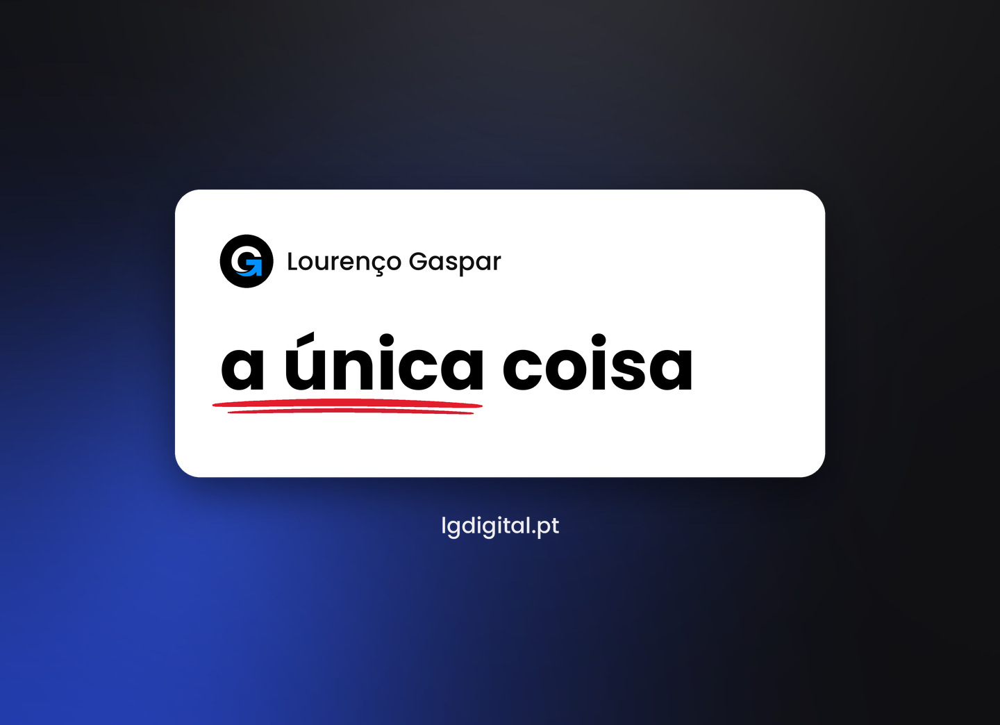
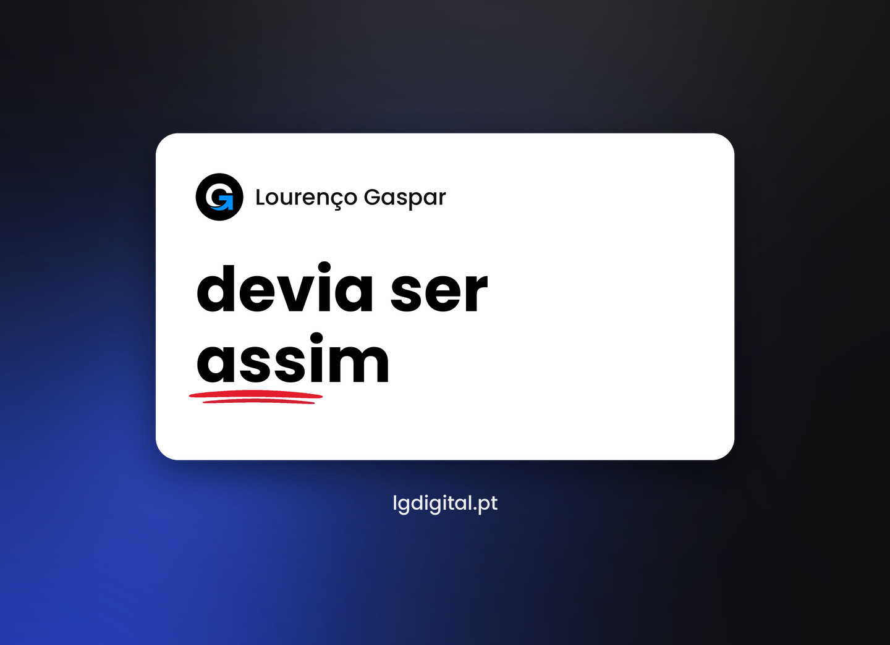
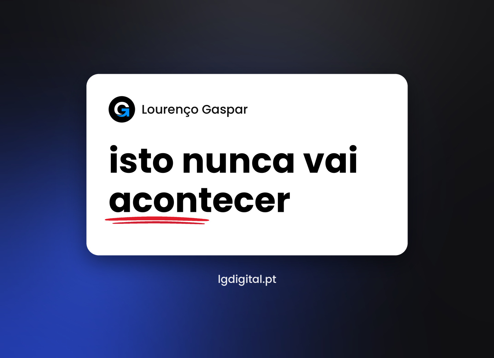
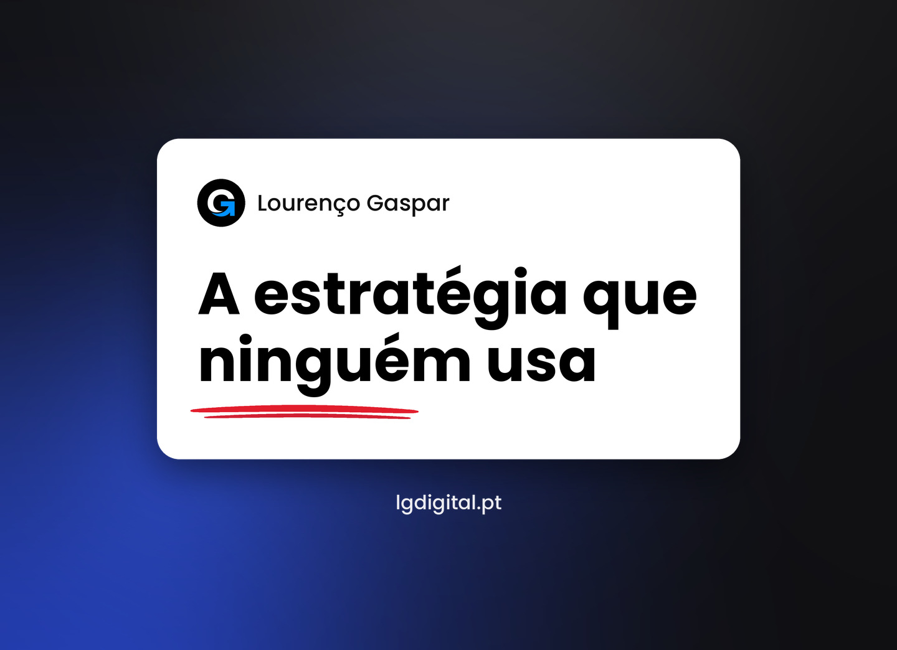
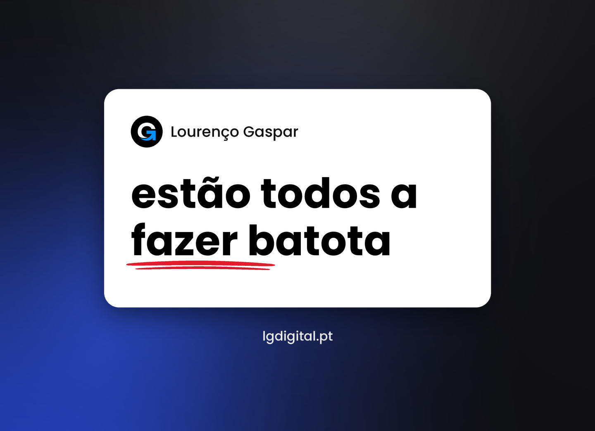
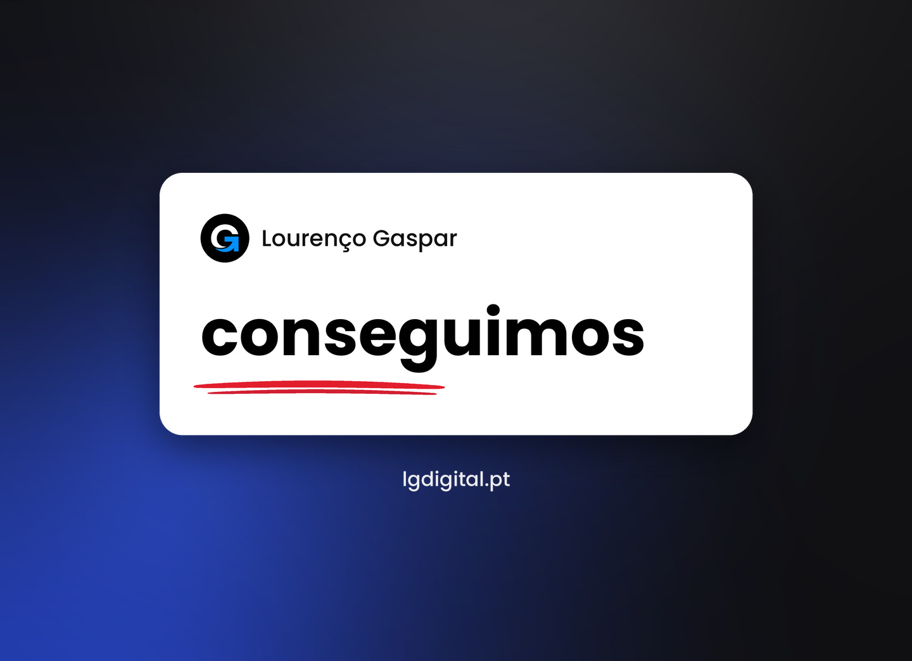
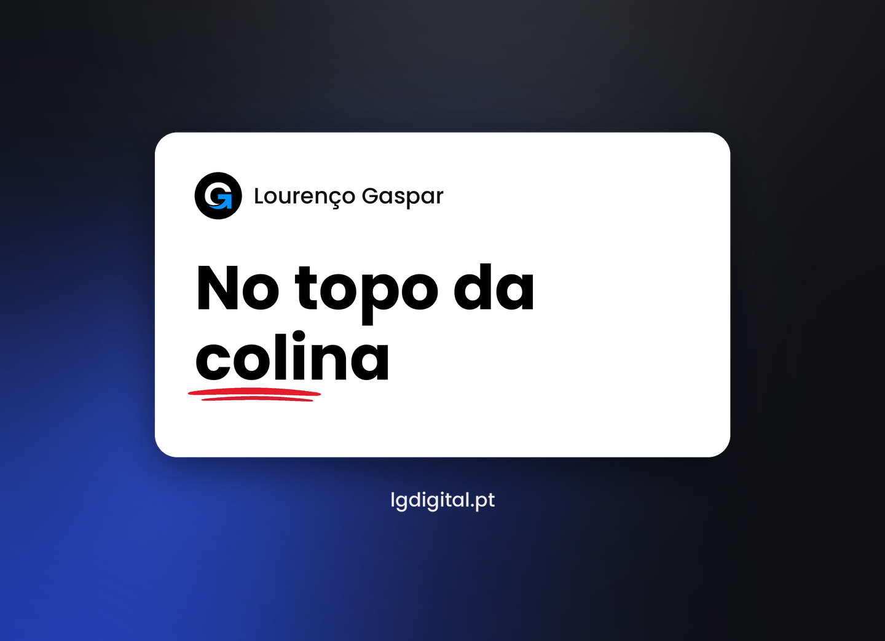
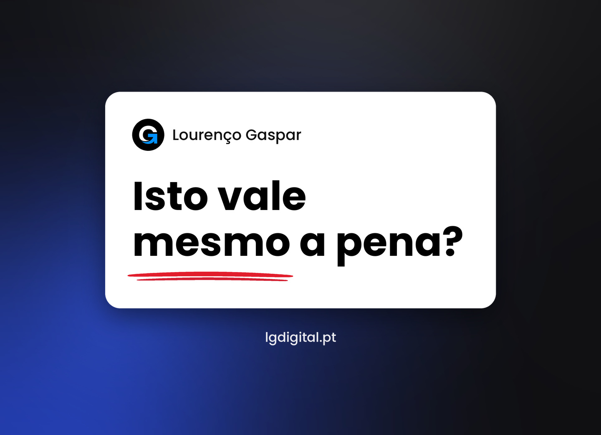

Blog
O Blog Para Conseguires Mais Clientes.
Táticas simples de marketing para empresas locais. Sem jargão e sem teoria: ideias que podes pôr em prática esta semana para conseguires mais clientes para a tua empresa.

a única coisaHá uma coisa que permite prever, com bastante precisão, quem vai ter sucesso e quem vai ter resultados fracos. É provavelmente o melhor indicador que conheço.
devia ser assimSe estás prestes a experimentar algo novo e isso não te intimida nem um bocadinho... provavelmente não é a coisa certa para fazeres.
isto nunca vai acontecerJá reparaste que cada vez mais CEOs estão a criar conteúdo para as próprias empresas? Podiam gravar anúncios ao nível de Hollywood. Mas, em vez disso, pegam num telemóvel. Simples e funcionaUma das formas mais simples de melhorar o teu posicionamento no Google. Demora 30 segundos para implementar. o melhor indicadorSe quiseres saber se alguém vai falhar, há uma característica que é um indicador quase perfeito. E não tem nada a ver com inteligência.
A estratégia que ninguém usaSe estás a correr anúncios neste momento e não estás a fazer remarketing, estás a desperdiçar dinheiro. Portanto, vamos corrigir isso. a melhor forma de nunca chegar a lado nenhum“Se 100 dos meus concorrentes também seguirem os teus conselhos, como é que eu vou ficar à frente deles?” Esta forma de pensar não faz sentido nenhum.
estão todos a fazer batotaUma empresa de construção perguntou-me se a conseguíamos pôr no top 3 do Google. Fui analisar a concorrência. E praticamente todos os negócios da primeira página estavam a fazer batota. 3 coisasÉ bastante simples colocar o teu negócio no top 3 do Google. Simples... mas não é fácil. No fundo, só precisas de otimizar três coisas.
estão todos enganadosToda a gente está completamente enganada em relação à inteligência artificial. A IA não é humana, nem nunca será. É uma máquina. E faz coisas incríveis.
3 coisasÉ bastante simples colocar o teu negócio no top 3 do Google. Simples... mas não é fácil. No fundo, só precisas de otimizar três coisas.
estão todos enganadosToda a gente está completamente enganada em relação à inteligência artificial. A IA não é humana, nem nunca será. É uma máquina. E faz coisas incríveis.

conseguimosHá algo extremamente satisfatório em abrir o Google e ver o teu negócio na posição número 1 para uma pesquisa que realmente interessa. Nunca paraToda a gente adora a ideia de uma máquina de movimento infinito. O problema é que isso não existe. Pelo menos no mundo real.
No topo da colinaO lobo que está no topo da colina nunca tem tanta fome como o lobo que está a subir. Mas quando quer comida... é só escolher. O Google funciona da mesma forma. Façam isto pararEstava tudo a correr bem. Até que, de repente, recebo uma mensagem do cliente: “temos de abrandar, estamos a receber demasiados pedidos!”
Façam isto pararEstava tudo a correr bem. Até que, de repente, recebo uma mensagem do cliente: “temos de abrandar, estamos a receber demasiados pedidos!”

Isto vale mesmo a pena?Ver a tua empresa no top 3 do Google soa bem e tudo mais, mas... será que vale mesmo o esforço?
Grátis

3 dicas para subires no Google
Recebe um vídeo gratuito com as três primeiras coisas que fazemos quando começamos a trabalhar com uma empresa para a pôr nos 3 primeiros resultados do Google.
Não precisas de conhecimento técnico.
Insere o teu email e recebes o vídeo na tua caixa de correio.
Recebe 3 Dicas GRATUITAS